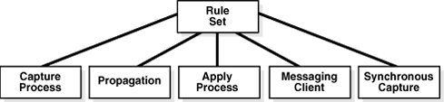
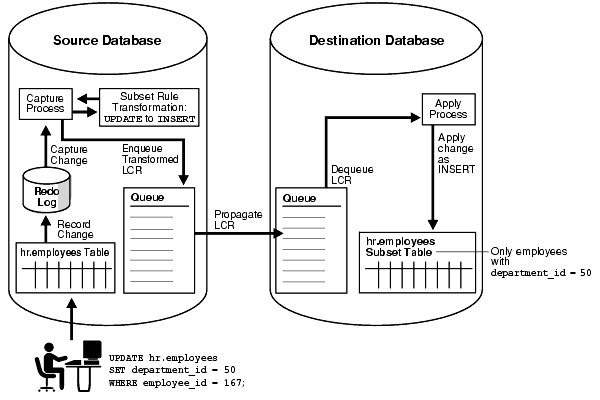
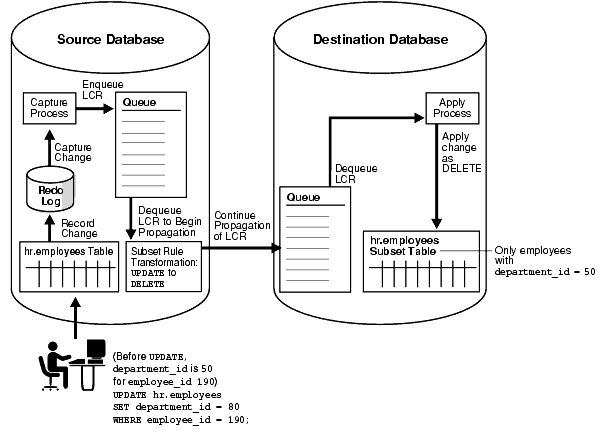
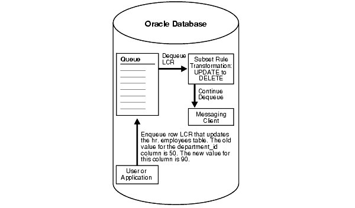

5 How Rules Are Used in Oracle Streams
The following topics contain information about how rules are used in Oracle Streams:
5.1 Overview of How Rules Are Used in Oracle Streams
In Oracle Streams, each of the following mechanisms is called an Oracle Streams client because each one is a client of a rules engine (when the mechanism is associated with one or more rule sets):
-
Capture process
-
Synchronous capture
-
Propagation
-
Apply process
-
Messaging client
Except for synchronous capture, each of these clients can be associated with at most two rule sets: a positive rule set and a negative rule set. A synchronous capture can be associated with at most one positive rule set. A synchronous capture cannot be associated with a negative rule set.
A single rule set can be used by multiple capture processes, synchronous captures, propagations, apply processes, and messaging clients within the same database. Also, a single rule set can be a positive rule set for one Oracle Streams client and a negative rule set for another Oracle Streams client.
Figure 5-1 illustrates how multiple clients of a rules engine can use one rule set.
Figure 5-1 One Rule Set Can Be Used by Multiple Clients of a Rules Engine
Description of "Figure 5-1 One Rule Set Can Be Used by Multiple Clients of a Rules Engine"
An Oracle Streams client performs a task if a message satisfies its rule sets. In general, a message satisfies the rule sets for an Oracle Streams client if no rules in the negative rule set evaluate to TRUE for the message, and at least one rule in the positive rule set evaluates to TRUE for the message.
"Rule Sets and Rule Evaluation of Messages" contains more detailed information about how a message satisfies the rule sets for an Oracle Streams client, including information about Oracle Streams client behavior when one or more rule sets are not specified.
You use rule sets in Oracle Streams in the following ways:
-
Specify the changes that a capture process captures from the redo log or discards. That is, if a change found in the redo log satisfies the rule sets for a capture process, then the capture process captures the change. If a change found in the redo log causes does not satisfy the rule sets for a capture process, then the capture process discards the change.
-
Specify the changes that a synchronous capture captures. That is, if DML change satisfies the rule set for a synchronous capture, then the synchronous capture captures the change immediately after the change is committed. If a DML change made to a table does not satisfy the rule set for a synchronous capture, then the synchronous capture does not capture the change.
-
Specify the messages that a propagation propagates from one queue to another or discards. That is, if a message in a queue satisfies the rule sets for a propagation, then the propagation propagates the message. If a message in a queue does not satisfy the rule sets for a propagation, then the propagation discards the message.
-
Specify the messages that an apply process dequeues or discards. That is, if a message in a queue satisfies the rule sets for an apply process, then the message is dequeued and processed by the apply process. If a message in a queue does not satisfy the rule sets for an apply process, then the apply process discards the message.
-
Specify the persistent LCRs or persistent user messages that a messaging client dequeues or discards. That is, if a message in a persistent queue satisfies the rule sets for a messaging client, then the user or application that is using the messaging client dequeues the message. If a message in a persistent queue does not satisfy the rule sets for a messaging client, then the user or application that is using the messaging client discards the message.
For a propagation, the messages evaluated against the rule sets can be any type of message, including captured LCRs, persistent LCRs, buffered LCRs, persistent user messages or buffered user messages.
For an apply process, the messages evaluated against the rule sets can be captured LCRs, persistent LCRs, or persistent user messages.
If there are conflicting rules in the positive rule set associated with a client, then the client performs the task if either rule evaluates to TRUE. For example, if a rule in the positive rule set for a capture process contains one rule that instructs the capture process to capture the results of data manipulation language (DML) changes to the hr.employees table, but another rule in the rule set instructs the capture process not to capture the results of DML changes to the hr.employees table, then the capture process captures these changes.
Similarly, if there are conflicting rules in the negative rule set associated with a client, then the client discards a message if either rule evaluates to TRUE for the message. For example, if a rule in the negative rule set for a capture process contains one rule that instructs the capture process to discard the results of DML changes to the hr.departments table, but another rule in the rule set instructs the capture process not to discard the results of DML changes to the hr.departments table, then the capture process discards these changes.
5.2 Rule Sets and Rule Evaluation of Messages
Oracle Streams clients perform the following tasks based on rules:
-
A capture process captures changes in the redo log, converts the changes into logical change records (LCRs), and enqueues messages containing these LCRs into the capture process queue.
-
A synchronous capture captures the results of DML changes made to tables, converts the changes into row logical change records (row LCRs), and enqueues messages containing these row LCRs into the synchronous capture queue.
-
A propagation propagates any type of message from a source queue to a destination queue.
-
An apply process dequeues either captured LCRs, persistent LCRs, or persistent user messages from its queue and applies these messages directly or sends the messages to an apply handler.
-
A messaging client dequeues persistent LCRs or persistent user messages from its queue.
These Oracle Streams clients are all clients of the rules engine. An Oracle Streams client performs its task for a message when the message satisfies the rule sets used by the Oracle Streams client. An Oracle Streams client can have no rule set, only a positive rule set, only a negative rule set, or both a positive and a negative rule set.
The following sections explain how rule evaluation works in each of these cases:
5.2.1 Oracle Streams Client with No Rule Set
An Oracle Streams client with no rule set performs its task for all of the messages it encounters. An empty rule set is not the same as no rule set at all.
A capture process should always have at least one rule set because it must not try to capture changes to unsupported database objects. If a propagation should always propagate all messages in its source queue, or if an apply process should always dequeue all messages in its queue, then removing all rule sets from the propagation or apply process might improve performance. A synchronous capture must have a positive rule set. A synchronous capture cannot be configured without a rule set.
5.2.2 Oracle Streams Client with a Positive Rule Set Only
An Oracle Streams client with a positive rule set, but no negative rule set, performs its task for a message if any rule in the positive rule set evaluates to TRUE for the message. However, if all of the rules in a positive rule set evaluate to FALSE for the message, then the Oracle Streams client discards the message.
5.2.3 Oracle Streams Client with a Negative Rule Set Only
An Oracle Streams client with a negative rule set, but no positive rule set, discards a message if any rule in the negative rule set evaluates to TRUE for the message. However, if all of the rules in a negative rule set evaluate to FALSE for the message, then the Oracle Streams client performs its task for the message. A synchronous capture cannot have a negative rule set.
5.2.4 Oracle Streams Client with Both a Positive and a Negative Rule Set
If an Oracle Streams client has both a positive and a negative rule set, then the negative rule set is evaluated first for a message. If any rule in the negative rule set evaluates to TRUE for the message, then the message is discarded, and the message is never evaluated against the positive rule set.
However, if all of the rules in the negative rule set evaluate to FALSE for the message, then the message is evaluated against the positive rule set. At this point, the behavior is the same as when the Oracle Streams client only has a positive rule set. That is, the Oracle Streams client performs its task for a message if any rule in the positive rule set evaluates to TRUE for the message. If all of the rules in a positive rule set evaluate to FALSE for the message, then the Oracle Streams client discards the message.
A synchronous capture cannot have a negative rule set.
5.2.5 Oracle Streams Client with One or More Empty Rule Sets
An Oracle Streams client can have one or more empty rule sets. An Oracle Streams client behaves in the following ways if it has one or more empty rule sets:
-
If an Oracle Streams client has no positive rule set, and its negative rule set is empty, then the Oracle Streams client performs its task for all messages.
-
If an Oracle Streams client has both a positive and a negative rule set, and the negative rule set is empty but its positive rule set contains rules, then the Oracle Streams client performs its task based on the rules in the positive rule set.
-
If an Oracle Streams client has a positive rule set that is empty, then the Oracle Streams client discards all messages, regardless of the state of its negative rule set.
5.2.6 Summary of Rule Sets and Oracle Streams Client Behavior
Table 5-1 summarizes the Oracle Streams client behavior described in the previous sections.
Table 5-1 Rule Sets and Oracle Streams Client Behavior
| Negative Rule Set | Positive Rule Set | Oracle Streams Client Behavior |
|---|---|---|
|
None |
None |
Performs its task for all messages |
|
None |
Exists with rules |
Performs its task for messages that evaluate to |
|
Exists with rules |
None |
Discards messages that evaluate to |
|
Exists with rules |
Exists with rules |
Discards messages that evaluate to |
|
Exists but is empty |
None |
Performs its task for all messages |
|
Exists but is empty |
Exists with rules |
Performs its task for messages that evaluate to |
|
None |
Exists but is empty |
Discards all messages |
|
Exists but is empty |
Exists but is empty |
Discards all messages |
|
Exists with rules |
Exists but is empty |
Discards all messages |
5.3 System-Created Rules
An Oracle Streams client performs its task for a message if the message satisfies its rule sets. A system-created rule is created by the DBMS_STREAMS_ADM package and can specify one of the following levels of granularity: table, schema, or global. This section describes each of these levels. You can specify more than one level for a particular task. For example, you can instruct a single apply process to perform table-level apply for specific tables in the oe schema and schema-level apply for the entire hr schema. In addition, a single rule pertains to either the results of data manipulation language (DML) changes or data definition language (DDL) changes. So, for example, you must use at least two system-created rules to include all of the changes to a particular table: one rule for the results of DML changes and another rule for DDL changes. The results of a DML change are the row changes that result from the DML change, or the row LCRs in a queue that encapsulate each row change.
Table 5-2 shows what each level of rule means for each Oracle Streams task. Remember that a negative rule set is evaluated before a positive rule set.
Table 5-2 Types of Tasks and Rule Levels
| Task | Table Rule | Schema Rule | Global Rule |
|---|---|---|---|
|
Capture with a capture process |
If the table rule is in a negative rule set, then discard the changes in the redo log for the specified table. If the table rule is in a positive rule set, then capture all or a subset of the changes in the redo log for the specified table, convert them into logical change records (LCRs), and enqueue them. |
If the schema rule is in a negative rule set, then discard the changes in the redo log for the schema itself and for the database objects in the specified schema. If the schema rule is in a positive rule set, then capture the changes in the redo log for the schema itself and for the database objects in the specified schema, convert them into LCRs, and enqueue them. |
If the global rule is in a negative rule set, then discard the changes to all of the database objects in the database. If the global rule is in a positive rule set, then capture the changes to all of the database objects in the database, convert them into LCRs, and enqueue them. |
|
Capture with a synchronous capture |
If the table rule is in a positive rule set, then capture all or a subset of the changes made to the specified table, convert them into logical change records (LCRs), and enqueue them. A synchronous capture cannot have a negative rule set. |
A synchronous capture cannot use schema rules. |
A synchronous capture cannot use global rules. |
|
Propagate with a propagation |
If the table rule is in a negative rule set, then discard the LCRs relating to the specified table in the source queue. If the table rule is in a positive rule set, then propagate all or a subset of the LCRs relating to the specified table in the source queue to the destination queue. |
If the schema rule is in a negative rule set, then discard the LCRs related to the specified schema itself and the LCRs related to database objects in the schema in the source queue. If the schema rule is in a positive rule set, then propagate the LCRs related to the specified schema itself and the LCRs related to database objects in the schema in the source queue to the destination queue. |
If the global rule is in a negative rule set, then discard all of the LCRs in the source queue. If the global rule is in a positive rule set, then propagate all of the LCRs in the source queue to the destination queue. |
|
Apply with an apply process |
If the table rule is in a negative rule set, then discard the LCRs in the queue relating to the specified table. If the table rule is in a positive rule set, then apply all or a subset of the LCRs in the queue relating to the specified table. |
If the schema rule is in a negative rule set, then discard the LCRs in the queue relating to the specified schema itself and the database objects in the schema. If the schema rule is in a positive rule set, then apply the LCRs in the queue relating to the specified schema itself and the database objects in the schema. |
If the global rule is in a negative rule set, then discard all of the LCRs in the queue. If the global rule is in a positive rule set, then apply all of the LCRs in the queue. |
|
Dequeue with a messaging client |
If the table rule is in a negative rule set, then, when the messaging client is invoked, discard the persistent LCRs relating to the specified table in the queue. If the table rule is in a positive rule set, then, when the messaging client is invoked, dequeue all or a subset of the persistent LCRs relating to the specified table in the queue. |
If the schema rule is in a negative rule set, then, when the messaging client is invoked, discard the persistent LCRs relating to the specified schema itself and the database objects in the schema in the queue. If the schema rule is in a positive rule set, then, when the messaging client is invoked, dequeue the persistent LCRs relating to the specified schema itself and the database objects in the schema in the queue. |
If the global rule is in a negative rule set, then, when the messaging client is invoked, discard all of the persistent LCRs in the queue. If the global rule is in a positive rule set, then, when the messaging client is invoked, dequeue all of the persistent LCRs in the queue. |
You can use procedures in the DBMS_STREAMS_ADM package to create rules at each of these levels. A system-created rule can include conditions that modify the Oracle Streams client behavior beyond the descriptions in Table 5-2. For example, some rules can specify a particular source database for LCRs, and, in this case, the rule evaluates to TRUE only if an LCR originated at the specified source database. Table 5-3 lists the types of system-created rule conditions that can be specified in the rules created by the DBMS_STREAMS_ADM package.
Table 5-3 System-Created Rule Conditions Generated by DBMS_STREAMS_ADM Package
| Rule Condition Evaluates to TRUE for | Oracle Streams Client | Create Using Procedure |
|---|---|---|
|
All row changes recorded in the redo log because of DML changes to any of the tables in a particular database |
Capture Process |
|
|
All DDL changes recorded in the redo log to any of the database objects in a particular database |
Capture Process |
|
|
All row changes recorded in the redo log because of DML changes to any of the tables in a particular schema |
Capture Process |
|
|
All DDL changes recorded in the redo log to a particular schema and any of the database objects in the schema |
Capture Process |
|
|
All row changes recorded in the redo log because of DML changes to a particular table |
Capture Process |
|
|
All DDL changes recorded in the redo log to a particular table |
Capture Process |
|
|
All row changes recorded in the redo log because of DML changes to a subset of rows in a particular table |
Capture Process |
|
|
All row changes made to a particular table resulting from DML statements |
Synchronous Capture |
|
|
All row changes made to a subset of rows in a particular table resulting from DML statements |
Synchronous Capture |
|
|
All row LCRs in the source queue |
Propagation |
|
|
All DDL LCRs in the source queue |
Propagation |
|
|
All row LCRs in the source queue relating to the tables in a particular schema |
Propagation |
|
|
All DDL LCRs in the source queue relating to a particular schema and any of the database objects in the schema |
Propagation |
|
|
All row LCRs in the source queue relating to a particular table |
Propagation |
|
|
All DDL LCRs in the source queue relating to a particular table |
Propagation |
|
|
All row LCRs in the source queue relating to a subset of rows in a particular table |
Propagation |
|
|
All user messages in the source queue of the specified type that satisfy the user-specified rule condition |
Propagation |
|
|
All row LCRs in the queue used by the apply process |
Apply Process |
|
|
All DDL LCRs in the queue used by the apply process |
Apply Process |
|
|
All row LCRs in the queue used by the apply process relating to the tables in a particular schema |
Apply Process |
|
|
All DDL LCRs in the queue used by the apply process relating to a particular schema and any of the database objects in the schema |
Apply Process |
|
|
All row LCRs in the queue used by the apply process relating to a particular table |
Apply Process |
|
|
All DDL LCRs in the queue used by the apply process relating to a particular table |
Apply Process |
|
|
All row LCRs in the queue used by the apply process relating to a subset of rows in a particular table |
Apply Process |
|
|
All persistent user messages in the queue used by the apply process of the specified type that satisfy the user-specified rule condition |
Apply Process |
|
|
All persistent row LCRs in the queue used by the messaging client |
Messaging Client |
|
|
All persistent DDL LCRs in the queue used by the messaging client |
Messaging Client |
|
|
All persistent row LCRs in the queue used by the messaging client relating to the tables in a particular schema |
Messaging Client |
|
|
All persistent DDL LCRs in the queue used by the messaging client relating to a particular schema and any of the database objects in the schema |
Messaging Client |
|
|
All persistent row LCRs in the queue for the messaging client relating to a particular table |
Messaging Client |
|
|
All persistent DDL LCRs in the queue used by the messaging client relating to a particular table |
Messaging Client |
|
|
All persistent row LCRs in the queue used by the messaging client relating to a subset of rows in a particular table |
Messaging Client |
|
|
All persistent messages in the queue used by the messaging client of the specified type that satisfy the user-specified rule condition |
Messaging Client |
|
Each procedure listed in Table 5-3 does the following:
-
Creates a capture process, synchronous capture, propagation, apply process, or messaging client if it does not already exist.
-
Creates a rule set for the specified capture process, synchronous capture, propagation, apply process, or messaging client if a rule set does not already exist for it. For a capture process, propagation, apply process, or messaging client, the rule set can be a positive rule set or a negative rule set. You can create each type of rule set by running the procedure at least twice. For a synchronous capture, the rule set must be a positive rule set.
-
Creates zero or more rules and adds the rules to the rule set for the specified capture process, synchronous capture, propagation, apply process, or messaging client. Based on your specifications when you run one of these procedures, the procedure adds the rules either to the positive rule set or to the negative rule set.
Except for the ADD_MESSAGE_RULE and ADD_MESSAGE_PROPAGATION_RULE procedures, these procedures create rule sets that use the SYS.STREAMS$_EVALUATION_CONTEXT evaluation context, which is an Oracle-supplied evaluation context for Oracle Streams environments.
Global, schema, table, and subset rules use the SYS.STREAMS$_EVALUATION_CONTEXT evaluation context. However, when you create a rule using either the ADD_MESSAGE_RULE or the ADD_MESSAGE_PROPAGATION_RULE procedure, the rule uses a system-generated evaluation context that is customized specifically for each message type. Rule sets created by the ADD_MESSAGE_RULE or the ADD_MESSAGE_PROPAGATION_RULE procedure do not have an evaluation context.
Except for ADD_SUBSET_RULES, ADD_SUBSET_PROPAGATION_RULES, ADD_MESSAGE_RULE, and ADD_MESSAGE_PROPAGATION_RULE, these procedures create either zero, one, or two rules. If you want to perform the Oracle Streams task for only the row changes resulting from DML changes or only for only DDL changes, then only one rule is created. If, however, you want to perform the Oracle Streams task for both the results of DML changes and DDL changes, then a rule is created for each. If you create a DML rule for a table now, then you can create a DDL rule for the same table in the future without modifying the DML rule created earlier. The same applies if you create a DDL rule for a table first and a DML rule for the same table in the future.
The ADD_SUBSET_RULES and ADD_SUBSET_PROPAGATION_RULES procedures always create three rules for three different types of DML operations on a table: INSERT, UPDATE, and DELETE. These procedures do not create rules for DDL changes to a table. You can use the ADD_TABLE_RULES or ADD_TABLE_PROPAGATION_RULES procedure to create a DDL rule for a table. In addition, you can add subset rules to positive rule sets only, not to negative rule sets.
The ADD_MESSAGE_RULE and ADD_MESSAGE_PROPAGATION_RULE procedures always create one rule with a user-specified rule condition. These procedures create rules for user messages. They do not create rules for the results of DML changes or DDL changes to a table.
When you create propagation rules for captured LCRs, Oracle recommends that you specify a source database for the changes. An apply process uses transaction control messages to assemble captured LCRs into committed transactions. These transaction control messages, such as COMMIT and ROLLBACK, contain the name of the source database where the message occurred. To avoid unintended cycling of these messages, propagation rules should contain a condition specifying the source database, and you accomplish this by specifying the source database when you create the propagation rules.
The following sections describe system-created rules in more detail:
Note:
-
To create rules with more complex rule conditions, such as rules that use the
NOTorORlogical conditions, either use theand_conditionparameter, which is available with some of the procedures in theDBMS_STREAMS_ADMpackage, or use theDBMS_RULE_ADMpackage. -
Each example in the sections that follow should be completed by an Oracle Streams administrator that has been granted the appropriate privileges, unless specified otherwise.
-
Some of the examples in this section have additional prerequisites. For example, a queue specified by a procedure parameter must exist.
See Also:
-
"Rule Sets and Rule Evaluation of Messages" for information about how messages satisfy the rule sets for an Oracle Streams client
-
Oracle Database PL/SQL Packages and Types Reference for more information about the
DBMS_STREAMS_ADMpackage and theDBMS_RULE_ADMpackage
5.3.1 Global Rules
When you use a rule to specify an Oracle Streams task that is relevant either to an entire database or to an entire queue, you are specifying a global rule. You can specify a global rule for DML changes, a global rule for DDL changes, or a global rule for each type of change (two rules total).
A single global rule in the positive rule set for a capture process means that the capture process captures the results of either all DML changes or all DDL changes to the source database. A single global rule in the negative rule set for a capture process means that the capture process discards the results of either all DML changes or all DDL changes to the source database.
A single global rule in the positive rule set for a propagation means that the propagation propagates either all row LCRs or all DDL LCRs in the source queue to the destination queue. A single global rule in the negative rule set for a propagation means that the propagation discards either all row LCRs or all DDL LCRs in the source queue.
A single global rule in the positive rule set for an apply process means that the apply process applies either all row LCRs or all DDL LCRs in its queue for a specified source database. A single global rule in the negative rule set for an apply process means that the apply process discards either all row LCRs or all DDL LCRs in its queue for a specified source database.
If you want to use global rules, but you are concerned about changes to database objects that are not supported by Oracle Streams, then you can create rules using the DBMS_RULE_ADM package to discard unsupported changes.
5.3.1.1 Global Rules Example
Suppose you use the ADD_GLOBAL_RULES procedure in the DBMS_STREAMS_ADM package to instruct an Oracle Streams capture process to capture all DML changes and DDL changes in a database.
Run the ADD_GLOBAL_RULES procedure to create the rules:
BEGIN
DBMS_STREAMS_ADM.ADD_GLOBAL_RULES(
streams_type => 'capture',
streams_name => 'capture',
queue_name => 'streams_queue',
include_dml => TRUE,
include_ddl => TRUE,
include_tagged_lcr => FALSE,
source_database => NULL,
inclusion_rule => TRUE);
END;
/
Notice that the inclusion_rule parameter is set to TRUE. This setting means that the system-created rules are added to the positive rule set for the capture process.
NULL can be specified for the source_database parameter because rules are being created for a local capture process. You can also specify the global name of the local database. When creating rules for a downstream capture process or apply process using ADD_GLOBAL_RULES, specify a source database name.
The ADD_GLOBAL_RULES procedure creates two rules: one for row LCRs (which contain the results of DML changes) and one for DDL LCRs.
Here is the rule condition used by the row LCR rule:
(:dml.is_null_tag() = 'Y' )
Notice that the condition in the DML rule begins with the variable :dml. The value is determined by a call to the specified member function for the row LCR being evaluated. So, :dml.is_null_tag() is a call to the IS_NULL_TAG member function for the row LCR being evaluated.
Here is the rule condition used by the DDL LCR rule:
(:ddl.is_null_tag() = 'Y' )
Notice that the condition in the DDL rule begins with the variable :ddl. The value is determined by a call to the specified member function for the DDL LCR being evaluated. So, :ddl.is_null_tag() is a call to the IS_NULL_TAG member function for the DDL LCR being evaluated.
For a capture process, these conditions indicate that the tag must be NULL in a redo record for the capture process to capture a change. For a propagation, these conditions indicate that the tag must be NULL in an LCR for the propagation to propagate the LCR. For an apply process, these conditions indicate that the tag must be NULL in an LCR for the apply process to apply the LCR.
Given the rules created by this example in the positive rule set for the capture process, the capture process captures all supported DML and DDL changes made to the database.
Note:
If you add global rules to the positive rule set for a capture process, then ensure that you add rules to the negative capture process rule set to exclude database objects that are not support by capture processes. Query the DBA_STREAMS_UNSUPPORTED data dictionary view to determine which database objects are not supported by capture processes. If unsupported database objects are not excluded, then capture errors will result.
If you add global rules to the positive rule set for an apply process, then ensure that the apply process does not attempt to apply changes to unsupported columns. To do so, you can add rules to the negative apply process rule set to exclude the table that contains the column, or you can exclude the column with a rule-based transformation or DML handler. Query the DBA_STREAMS_COLUMNS data dictionary view to determine which columns are not supported by apply processes. If unsupported columns are not excluded, then apply errors will result.
5.3.1.2 System-Created Global Rules Avoid Empty Rule Conditions Automatically
You can omit the is_null_tag condition in system-created rules by specifying TRUE for the include_tagged_lcr parameter when you run a procedure in the DBMS_STREAMS_ADM package. For example, the following ADD_GLOBAL_RULES procedure creates rules without the is_null_tag condition:
BEGIN DBMS_STREAMS_ADM.ADD_GLOBAL_RULES( streams_type => 'capture', streams_name => 'capture_002', queue_name => 'streams_queue', include_dml => TRUE, include_ddl => TRUE, include_tagged_lcr => TRUE, source_database => NULL, inclusion_rule => TRUE); END; /
When you set the include_tagged_lcr parameter to TRUE for a global rule, and the source_database_name parameter is set to NULL, the rule condition used by the row LCR rule is the following:
(( :dml.get_source_database_name()>=' ' OR :dml.get_source_database_name()<=' ') )
Here is the rule condition used by the DDL LCR rule:
(( :ddl.get_source_database_name()>=' ' OR :ddl.get_source_database_name()<=' ') )
The system-created global rules contain these conditions to enable all row and DDL LCRs to evaluate to TRUE.
These rule conditions are specified to avoid NULL rule conditions for these rules. NULL rule conditions are not supported. In this case, if you want to capture all DML and DDL changes to a database, and you do not want to use any rule-based transformations for these changes upon capture, then you can choose to run the capture process without a positive rule set instead of specifying global rules.
Note:
-
When you create a capture process using a procedure in the
DBMS_STREAMS_ADMpackage and generate one or more rules for the capture process, the objects for which changes are captured are prepared for instantiation automatically, unless it is a downstream capture process and there is no database link from the downstream database to the source database. -
The capture process does not capture some types of DML and DDL changes, and it does not capture changes made in the
SYS,SYSTEM, orCTXSYSschemas.
See Also:
-
Oracle Streams Replication Administrator's Guide for more information about capture process rules and preparation for instantiation
-
Oracle Streams Information Capture for more information about the capture process and for detailed information about which DML and DDL statements are captured by a capture process
-
Advanced Rule Concepts for more information about variables in conditions
-
Oracle Streams Replication Administrator's Guide for more information about Oracle Streams tags
-
"Rule Sets and Rule Evaluation of Messages" for more information about running a capture process with no positive rule set
5.3.2 Schema Rules
When you use a rule to specify an Oracle Streams task that is relevant to a schema, you are specifying a schema rule. You can specify a schema rule for DML changes, a schema rule for DDL changes, or a schema rule for each type of change to the schema (two rules total).
A single schema rule in the positive rule set for a capture process means that the capture process captures either the DML changes or the DDL changes to the schema. A single schema rule in the negative rule set for a capture process means that the capture process discards either the DML changes or the DDL changes to the schema.
A single schema rule in the positive rule set for a propagation means that the propagation propagates either the row LCRs or the DDL LCRs in the source queue that contain changes to the schema. A single schema rule in the negative rule set for a propagation means that the propagation discards either the row LCRs or the DDL LCRs in the source queue that contain changes to the schema.
A single schema rule in the positive rule set for an apply process means that the apply process applies either the row LCRs or the DDL LCRs in its queue that contain changes to the schema. A single schema rule in the negative rule set for an apply process means that the apply process discards either the row LCRs or the DDL LCRs in its queue that contain changes to the schema.
If you want to use schema rules, but you are concerned about changes to database objects in a schema that are not supported by Oracle Streams, then you can create rules using the DBMS_RULE_ADM package to discard unsupported changes.
5.3.2.1 Schema Rule Example
Suppose you use the ADD_SCHEMA_PROPAGATION_RULES procedure in the DBMS_STREAMS_ADM package to instruct an Oracle Streams propagation to propagate row LCRs and DDL LCRs relating to the hr schema from a queue at the dbs1.example.com database to a queue at the dbs2.example.com database.
Run the ADD_SCHEMA_PROPAGATION_RULES procedure at dbs1.example.com to create the rules:
BEGIN
DBMS_STREAMS_ADM.ADD_SCHEMA_PROPAGATION_RULES(
schema_name => 'hr',
streams_name => 'dbs1_to_dbs2',
source_queue_name => 'streams_queue',
destination_queue_name => 'streams_queue@dbs2.example.com',
include_dml => TRUE,
include_ddl => TRUE,
include_tagged_lcr => FALSE,
source_database => 'dbs1.example.com',
inclusion_rule => TRUE);
END;
/
Notice that the inclusion_rule parameter is set to TRUE. This setting means that the system-created rules are added to the positive rule set for the propagation.
The ADD_SCHEMA_PROPAGATION_RULES procedure creates two rules: one for row LCRs (which contain the results of DML changes) and one for DDL LCRs.
Here is the rule condition used by the row LCR rule:
((:dml.get_object_owner() = 'HR') and :dml.is_null_tag() = 'Y' and :dml.get_source_database_name() = 'DBS1.EXAMPLE.COM' )
Here is the rule condition used by the DDL LCR rule:
((:ddl.get_object_owner() = 'HR' or :ddl.get_base_table_owner() = 'HR') and :ddl.is_null_tag() = 'Y' and :ddl.get_source_database_name() = 'DBS1.EXAMPLE.COM' )
The GET_BASE_TABLE_OWNER member function is used in the DDL LCR rule because the GET_OBJECT_OWNER function can return NULL if a user who does not own an object performs a DDL change on the object.
Given these rules in the positive rule set for the propagation, the following list provides examples of changes propagated by the propagation:
-
A row is inserted into the
hr.countriestable. -
The
hr.loc_city_ixindex is altered. -
The
hr.employeestable is truncated. -
A column is added to the
hr.countriestable. -
The
hr.update_job_historytrigger is altered. -
A new table named
candidatesis created in thehrschema. -
Twenty rows are inserted into the
hr.candidatestable.
The propagation propagates the LCRs that contain all of the changes previously listed from the source queue to the destination queue.
Now, given the same rules, suppose a row is inserted into the oe.inventories table. This change is ignored because the oe schema was not specified in a schema rule, and the oe.inventories table was not specified in a table rule.
Note:
If you add schema rules to the positive rule set for a capture process, then ensure that you add rules to the negative capture process rule set to exclude database objects in the schema that are not support by capture processes. Query the DBA_STREAMS_UNSUPPORTED data dictionary view to determine which database objects are not supported by capture processes. If unsupported database objects are not excluded, then capture errors will result.
If you add schema rules to the positive rule set for an apply process, then ensure that the apply process does not attempt to apply changes to unsupported columns. To do so, you can add rules to the negative apply process rule set to exclude the table that contains the column, or you can exclude the column with a rule-based transformation or DML handler. Query the DBA_STREAMS_COLUMNS data dictionary view to determine which columns are not supported by apply processes. If unsupported columns are not excluded, then apply errors will result.
5.3.3 Table Rules
When you use a rule to specify an Oracle Streams task that is relevant only for an individual table, you are specifying a table rule. You can specify a table rule for DML changes, a table rule for DDL changes, or a table rule for each type of change to a specific table (two rules total).
A single table rule in the positive rule set for a capture process means that the capture process captures the results of either the DML changes or the DDL changes to the table. A single table rule in the negative rule set for a capture process means that the capture process discards the results of either the DML changes or the DDL changes to the table.
A single table rule in the positive rule set for a synchronous capture means that the synchronous capture captures the results of either the DML changes to the table. A synchronous capture cannot have a negative rule set.
A single table rule in the positive rule set for a propagation means that the propagation propagates either the row LCRs or the DDL LCRs in the source queue that contain changes to the table. A single table rule in the negative rule set for a propagation means that the propagation discards either the row LCRs or the DDL LCRs in the source queue that contain changes to the table.
A single table rule in the positive rule set for an apply process means that the apply process applies either the row LCRs or the DDL LCRs in its queue that contain changes to the table. A single table rule in the negative rule set for an apply process means that the apply process discards either the row LCRs or the DDL LCRs in its queue that contain changes to the table.
5.3.3.1 Table Rules Example
Suppose you use the ADD_TABLE_RULES procedure in the DBMS_STREAMS_ADM package to instruct an Oracle Streams apply process to behave in the following ways:
5.3.3.1.1 Apply All Row LCRs Related to the hr.locations Table
The changes in these row LCRs originated at the dbs1.example.com source database.
Run the ADD_TABLE_RULES procedure to create this rule:
BEGIN
DBMS_STREAMS_ADM.ADD_TABLE_RULES(
table_name => 'hr.locations',
streams_type => 'apply',
streams_name => 'apply',
queue_name => 'streams_queue',
include_dml => TRUE,
include_ddl => FALSE,
include_tagged_lcr => FALSE,
source_database => 'dbs1.example.com',
inclusion_rule => TRUE);
END;
/
Notice that the inclusion_rule parameter is set to TRUE. This setting means that the system-created rule is added to the positive rule set for the apply process.
The ADD_TABLE_RULES procedure creates a rule with a rule condition similar to the following:
(((:dml.get_object_owner() = 'HR' and :dml.get_object_name() = 'LOCATIONS')) and :dml.is_null_tag() = 'Y' and :dml.get_source_database_name() = 'DBS1.EXAMPLE.COM' )
5.3.3.1.2 Apply All DDL LCRs Related to the hr.countries Table
The changes in these DDL LCRs originated at the dbs1.example.com source database.
Run the ADD_TABLE_RULES procedure to create this rule:
BEGIN
DBMS_STREAMS_ADM.ADD_TABLE_RULES(
table_name => 'hr.countries',
streams_type => 'apply',
streams_name => 'apply',
queue_name => 'streams_queue',
include_dml => FALSE,
include_ddl => TRUE,
include_tagged_lcr => FALSE,
source_database => 'dbs1.example.com',
inclusion_rule => TRUE);
END;
/
Notice that the inclusion_rule parameter is set to TRUE. This setting means that the system-created rule is added to the positive rule set for the apply process.
The ADD_TABLE_RULES procedure creates a rule with a rule condition similar to the following:
(((:ddl.get_object_owner() = 'HR' and :ddl.get_object_name() = 'COUNTRIES') or (:ddl.get_base_table_owner() = 'HR' and :ddl.get_base_table_name() = 'COUNTRIES')) and :ddl.is_null_tag() = 'Y' and :ddl.get_source_database_name() = 'DBS1.EXAMPLE.COM' )
The GET_BASE_TABLE_OWNER and GET_BASE_TABLE_NAME member functions are used in the DDL LCR rule because the GET_OBJECT_OWNER and GET_OBJECT_NAME functions can return NULL if a user who does not own an object performs a DDL change on the object.
The generated DDL table rule evaluates to TRUE for any DDL change that operates on the table or on an object that is part of the table, such as an index or trigger on the table. The rule evaluates to FALSE for any DDL change that either does not refer to the table or refers to the table in a subordinate way. For example, the rule evaluates to FALSE for changes that create synonyms or views based on the table. The rule also evaluates to FALSE for a change to a PL/SQL subprogram that refers to the table.
5.3.3.1.3 Summary of Rules
In this example, the following table rules were defined:
-
A table rule that evaluates to
TRUEif a row LCR contains a row change that results from a DML operation on thehr.locationstable. -
A table rule that evaluates to
TRUEif a DDL LCR contains a DDL change performed on thehr.countriestable.
Given these rules, the following list provides examples of changes applied by an apply process:
-
A row is inserted into the
hr.locationstable. -
Five rows are deleted from the
hr.locationstable. -
A column is added to the
hr.countriestable.
The apply process dequeues the LCRs containing these changes from its associated queue and applies them to the database objects at the destination database.
Given these rules, the following list provides examples of changes that are ignored by the apply process:
-
A row is inserted into the
hr.employeestable. This change is not applied because a change to thehr.employeestable does not satisfy any of the rules. -
A row is updated in the
hr.countriestable. This change is a DML change, not a DDL change. This change is not applied because the rule on thehr.countriestable is for DDL changes only. -
A column is added to the
hr.locationstable. This change is a DDL change, not a DML change. This change is not applied because the rule on thehr.locationstable is for DML changes only.
Note:
Do not add table rules to the positive rule set of a capture process for tables that are not supported by capture processes. Query the DBA_STREAMS_UNSUPPORTED data dictionary view to determine which tables are not supported by capture processes. If unsupported table are not excluded, then capture errors will result.
If you add table rules to the positive rule set for a synchronous capture or an apply process, then ensure that these Oracle Streams clients do not attempt to process changes to unsupported columns. If a table includes an unsupported column, then you can exclude the column with a rule-based transformation or, for an apply process, with a DML handler. Query the DBA_STREAMS_COLUMNS data dictionary view to determine which columns are not supported by synchronous captures and apply processes. If unsupported columns are not excluded, then errors will result.
5.3.4 Subset Rules
A subset rule is a special type of table rule for DML changes that is relevant only to a subset of the rows in a table. You can create subset rules for capture processes, synchronous captures, apply processes, and messaging clients using the ADD_SUBSET_RULES procedure. You can create subset rules for propagations using the ADD_SUBSET_PROPAGATION_RULES procedure. These procedures enable you to use a condition similar to a WHERE clause in a SELECT statement to specify the following:
-
That a capture process only captures a subset of the row changes resulting from DML changes to a particular table
-
That a synchronous capture only captures a subset of the row changes resulting from DML changes to a particular table
-
That a propagation only propagates a subset of the row LCRs relating to a particular table
-
That an apply process only applies a subset of the row LCRs relating to a particular table
-
That a messaging client only dequeues a subset of the row LCRs relating to a particular table
The ADD_SUBSET_RULES procedure and the ADD_SUBSET_PROPAGATION_RULES procedure can add subset rules to the positive rule set only of an Oracle Streams client. You cannot add subset rules to the negative rule set for an Oracle Streams client using these procedures.
The following sections describe subset rules in more detail:
See Also:
5.3.4.1 Subset Rules Example
This example instructs an Oracle Streams apply process to apply a subset of row LCRs relating to the hr.regions table where the region_id is 2. These changes originated at the dbs1.example.com source database.
Run the ADD_SUBSET_RULES procedure to create three rules:
BEGIN
DBMS_STREAMS_ADM.ADD_SUBSET_RULES(
table_name => 'hr.regions',
dml_condition => 'region_id=2',
streams_type => 'apply',
streams_name => 'apply',
queue_name => 'streams_queue',
include_tagged_lcr => FALSE,
source_database => 'dbs1.example.com');
END;
/
The ADD_SUBSET_RULES procedure creates three rules: one for INSERT operations, one for UPDATE operations, and one for DELETE operations.
Here is the rule condition used by the insert rule:
:dml.get_object_owner()='HR' AND :dml.get_object_name()='REGIONS'
AND :dml.is_null_tag()='Y' AND :dml.get_source_database_name()='DBS1.EXAMPLE.COM'
AND :dml.get_command_type() IN ('UPDATE','INSERT')
AND (:dml.get_value('NEW','"REGION_ID"') IS NOT NULL)
AND (:dml.get_value('NEW','"REGION_ID"').AccessNumber()=2)
AND (:dml.get_command_type()='INSERT'
OR ((:dml.get_value('OLD','"REGION_ID"') IS NOT NULL)
AND (((:dml.get_value('OLD','"REGION_ID"').AccessNumber() IS NOT NULL)
AND NOT (:dml.get_value('OLD','"REGION_ID"').AccessNumber()=2))
OR ((:dml.get_value('OLD','"REGION_ID"').AccessNumber() IS NULL)
AND NOT EXISTS (SELECT 1 FROM SYS.DUAL
WHERE (:dml.get_value('OLD','"REGION_ID"').AccessNumber()=2))))))
Based on this rule condition, row LCRs are evaluated in the following ways:
-
For an insert, if the new value in the row LCR for
region_idis2, then the insert is applied. -
For an insert, if the new value in the row LCR for
region_idis not2or isNULL, then the insert is filtered out. -
For an update, if the old value in the row LCR for
region_idis not2or isNULLand the new value in the row LCR forregion_idis2, then the update is converted into an insert and applied. This automatic conversion is called row migration. See "Row Migration and Subset Rules" for more information.
Here is the rule condition used by the update rule:
:dml.get_object_owner()='HR' AND :dml.get_object_name()='REGIONS'
AND :dml.is_null_tag()='Y' AND :dml.get_source_database_name()='DBS1.EXAMPLE.COM'
AND :dml.get_command_type()='UPDATE'
AND (:dml.get_value('NEW','"REGION_ID"') IS NOT NULL)
AND (:dml.get_value('OLD','"REGION_ID"') IS NOT NULL)
AND (:dml.get_value('OLD','"REGION_ID"').AccessNumber()=2)
AND (:dml.get_value('NEW','"REGION_ID"').AccessNumber()=2)
Based on this rule condition, row LCRs are evaluated in the following ways:
-
For an update, if both the old value and the new value in the row LCR for
region_idare2, then the update is applied as an update. -
For an update, if either the old value or the new value in the row LCR for
region_idis not2or isNULL, then the update does not satisfy the update rule. The LCR can satisfy the insert rule, the delete rule, or neither rule.
Here is the rule condition used by the delete rule:
:dml.get_object_owner()='HR' AND :dml.get_object_name()='REGIONS'
AND :dml.is_null_tag()='Y' AND :dml.get_source_database_name()='DBS1.EXAMPLE.COM'
AND :dml.get_command_type() IN ('UPDATE','DELETE')
AND (:dml.get_value('OLD','"REGION_ID"') IS NOT NULL)
AND (:dml.get_value('OLD','"REGION_ID"').AccessNumber()=2)
AND (:dml.get_command_type()='DELETE'
OR ((:dml.get_value('NEW','"REGION_ID"') IS NOT NULL)
AND (((:dml.get_value('NEW','"REGION_ID"').AccessNumber() IS NOT NULL)
AND NOT (:dml.get_value('NEW','"REGION_ID"').AccessNumber()=2))
OR ((:dml.get_value('NEW','"REGION_ID"').AccessNumber() IS NULL)
AND NOT EXISTS (SELECT 1 FROM SYS.DUAL
WHERE (:dml.get_value('NEW','"REGION_ID"').AccessNumber()=2))))))
Based on this rule condition, row LCRs are evaluated in the following ways:
-
For a delete, if the old value in the row LCR for
region_idis2, then the delete is applied. -
For a delete, if the old value in the row LCR for
region_idis not2or isNULL, then the delete is filtered out. -
For an update, if the old value in the row LCR for
region_idis2and the new value in the row LCR forregion_idis not2or isNULL, then the update is converted into a delete and applied. This automatic conversion is called row migration. See "Row Migration and Subset Rules" for more information.
Given these subset rules, the following list provides examples of changes applied by an apply process:
-
A row is updated in the
hr.regionstable where the oldregion_idis4and the new value ofregion_idis2. This update is transformed into an insert. -
A row is updated in the
hr.regionstable where the oldregion_idis2and the new value ofregion_idis1. This update is transformed into a delete.
The apply process dequeues row LCRs containing these changes from its associated queue and applies them to the hr.regions table at the destination database.
Given these subset rules, the following list provides examples of changes that are ignored by the apply process:
-
A row is inserted into the
hr.employeestable. This change is not applied because a change to thehr.employeestable does not satisfy the subset rules. -
A row is updated in the
hr.regionstable where theregion_idwas1before the update and remains1after the update. This change is not applied because the subset rules for thehr.regionstable evaluate toTRUEonly when the new or old (or both) values forregion_idis2.
Note:
Do not add subset rules to the positive rule set of a capture process for tables that are not supported by capture processes. Query the DBA_STREAMS_UNSUPPORTED data dictionary view to determine which tables are not supported by capture processes. If unsupported table are not excluded, then capture errors will result.
If you add subset rules to the positive rule set for a synchronous capture or an apply process, then ensure that these Oracle Streams clients do not attempt to process changes to unsupported columns. If a table includes an unsupported column, then you can exclude the column with a rule-based transformation or, for an apply process, with a DML handler. Query the DBA_STREAMS_COLUMNS data dictionary view to determine which columns are not supported by synchronous captures and apply processes. If unsupported columns are not excluded, then errors will result.
5.3.4.2 Row Migration and Subset Rules
When you use subset rules, an update operation can be converted into an insert or delete operation when it is captured, propagated, applied, or dequeued. This automatic conversion is called row migration and is performed by an internal transformation specified automatically in the action context for a subset rule. The following sections describe row migration during capture, propagation, apply, and dequeue.
This section contains these topics:
Note:
Subset rules should reside only in positive rule sets. Do not add subset rules to negative rule sets. Doing so can have unpredictable results, because row migration would not be performed on LCRs that are not discarded by the negative rule set. Also, row migration is not performed on LCRs discarded because they evaluate to TRUE against a negative rule set.
5.3.4.2.1 Row Migration During Capture
When a subset rule is in the rule set for a capture process or synchronous capture, an update that satisfies the subset rule can be converted into an insert or delete when it is captured.
For example, suppose you use a subset rule to specify that a capture process or a synchronous capture captures changes to the hr.employees table where the employee's department_id is 50 using the following subset condition: department_id = 50. Assume that the table at the source database contains records for employees from all departments. If a DML operation changes an employee's department_id from 80 to 50, then the subset rule converts the update operation into an insert operation and captures the change. Therefore, a row LCR that contains an INSERT is enqueued into the queue. Figure 5-2 illustrates this example with a subset rule for a capture process.
Figure 5-2 Row Migration During Capture by a Capture Process
Description of "Figure 5-2 Row Migration During Capture by a Capture Process"
Similarly, if a captured update changes an employee's department_id from 50 to 20, then a capture process or synchronous capture with this subset rule converts the update operation into a DELETE operation.
5.3.4.2.2 Row Migration During Propagation
When a subset rule is in the rule set for a propagation, an update operation can be converted into an insert or delete operation when a row LCR is propagated.
For example, suppose you use a subset rule to specify that a propagation propagates changes to the hr.employees table where the employee's department_id is 50 using the following subset condition: department_id = 50. If the source queue for the propagation contains a row LCR with an update operation on the hr.employees table that changes an employee's department_id from 50 to 80, then the propagation with the subset rule converts the update operation into a delete operation and propagates the row LCR to the destination queue. Therefore, a row LCR that contains a DELETE is enqueued into the destination queue. Figure 5-3 illustrates this example.
Figure 5-3 Row Migration During Propagation
Description of "Figure 5-3 Row Migration During Propagation"
Similarly, if a captured update changes an employee's department_id from 80 to 50, then a propagation with this subset rule converts the update operation into an INSERT operation.
5.3.4.2.3 Row Migration During Apply
When a subset rule is in the rule set for an apply process, an update operation can be converted into an insert or delete operation when a row LCR is applied.
For example, suppose you use a subset rule to specify that an apply process applies changes to the hr.employees table where the employee's department_id is 50 using the following subset condition: department_id = 50. Assume that the table at the destination database is a subset table that only contains records for employees whose department_id is 50. If a source database captures a change to an employee that changes the employee's department_id from 80 to 50, then the apply process with the subset rule at a destination database applies this change by converting the update operation into an insert operation. This conversion is needed because the employee's row does not exist in the destination table. Figure 5-4 illustrates this example.
Similarly, if a captured update changes an employee's department_id from 50 to 20, then an apply process with this subset rule converts the update operation into a DELETE operation.
5.3.4.2.4 Row Migration During Dequeue by a Messaging Client
When a subset rule is in the rule set for a messaging client, an update operation can be converted into an insert or delete operation when a row LCR is dequeued.
For example, suppose you use a subset rule to specify that a messaging client dequeues changes to the hr.employees table when the employee's department_id is 50 using the following subset condition: department_id = 50. If the queue for a messaging client contains a persistent row LCR with an update operation on the hr.employees table that changes an employee's department_id from 50 to 90, then when a user or application invokes a messaging client with this subset rule, the messaging client converts the update operation into a delete operation and dequeues the row LCR. Therefore, a row LCR that contains a DELETE is dequeued. The messaging client can process this row LCR in any customized way. For example, it can send the row LCR to a custom application. Figure 5-5 illustrates this example.
Figure 5-5 Row Migration During Dequeue by a Messaging Client
Description of "Figure 5-5 Row Migration During Dequeue by a Messaging Client"
Similarly, if a persistent row LCR contains an update that changes an employee's department_id from 90 to 50, then a messaging client with this subset rule converts the UPDATE operation into an INSERT operation during dequeue.
5.3.4.3 Subset Rules and Supplemental Logging
Supplemental logging is required when you specify the following types of subset rules:
-
Subset rules for a capture process
-
Subset rules for a propagation that will propagate LCRs captured by a capture process
-
Subset rules for an apply process that will apply LCRs captured by a capture process
In any of these cases, an unconditional supplemental log group must be specified at the source database for all the columns in the subset condition and all of the columns in the table(s) at the destination database(s) that will apply these changes. In some cases, when a subset rule is specified, an update can be converted to an insert, and, in these cases, supplemental information might be needed for some or all of the columns.
For example, if you specify a subset rule for an apply process that will apply captured LCRs at database dbs2.example.com on the postal_code column in the hr.locations table, and the source database for changes to this table is dbs1.example.com, then specify supplemental logging at dbs1.example.com for all of the columns that exist in the hr.locations table at dbs2.example.com, and for the postal_code column, even if this column does not exist in the table at the destination database.
Note:
Supplemental logging is not required when subset rules are used by a synchronous capture. Also, supplemental logging is not required propagations or apply processes process LCRs captured by synchronous capture.
See Also:
-
Oracle Streams Replication Administrator's Guide for detailed information about supplemental logging
5.3.4.4 Guidelines for Using Subset Rules
The following sections provide guidelines for using subset rules:
5.3.4.4.1 Use Capture Subset Rules When All Destinations Need Only a Subset of Changes
Use subset rules with a capture process or a synchronous capture when all destination databases of the captured changes need only row changes that satisfy the subset condition for the table. In this case, a capture process or a synchronous capture captures a subset of the DML changes to the table, and one or more propagations propagate these changes in the form of row LCRs to one or more destination databases. At each destination database, an apply process applies these row LCRs to a subset table in which all of the rows satisfy the subset condition in the subset rules for the capture process. None of the destination databases need all of the DML changes made to the table. When you use subset rules for a local capture process or a synchronous capture, some additional overhead is incurred to perform row migrations at the site running the source database.
5.3.4.4.2 Use Propagation or Apply Subset Rules When Some Destinations Need Subsets
Use subset rules with a propagation or an apply process when some destinations in an environment need only a subset of captured DML changes. The following are examples of such an environment:
-
Most of the destination databases for captured DML changes to a table need a different subset of these changes.
-
Most of the destination databases need all of the captured DML changes to a table, but some destination databases need only a subset of these changes.
In these types of environments, the capture process or synchronous capture must capture all of the changes to the table, but you can use subset rules with propagations and apply processes to ensure that subset tables at destination databases only apply the correct subset of captured DML changes.
Consider these factors when you decide to use subset rules with a propagation in this type of environment:
-
You can reduce network traffic because fewer row LCRs are propagated over the network.
-
The site that contains the source queue for the propagation incurs some additional overhead to perform row migrations.
Consider these factors when you decide to use subset rules with an apply process in this type of environment:
-
The queue used by the apply process can contain all row LCRs for the subset table. In a directed networks environment, propagations can propagate any of the row LCRs for the table to destination queues as appropriate, whether the apply process applies these row LCRs.
-
The site that is running the apply process incurs some additional overhead to perform row migrations.
5.3.4.4.3 Ensure That the Table Where Subset Row LCRs Are Applied Is a Subset Table
If an apply process might apply row LCRs that have been transformed by a row migration, then Oracle recommends that the table at the destination database be a subset table where each row matches the condition in the subset rule. If the table is not such a subset table, then apply errors might result.
For example, consider a scenario in which a subset rule for a capture process has the condition department_id = 50 for DML changes to the hr.employees table. If the hr.employees table at a destination database of this capture process contains rows for employees in all departments, not just in department 50, then a constraint violation might result during apply:
-
At the source database, a DML change updates the
hr.employeestable and changes thedepartment_idfor the employee with anemployee_idof100from90to50. -
A capture process using the subset rule captures the change and converts the update into an insert and enqueues the change into the capture process's queue as a row LCR.
-
A propagation propagates the row LCR to the destination database without modifying it.
-
An apply process attempts to apply the row LCR as an insert at the destination database, but an employee with an
employee_idof100already exists in thehr.employeestable, and an apply error results.
In this case, if the table at the destination database were a subset of the hr.employees table and only contained rows of employees whose department_id was 50, then the insert would have been applied successfully.
Similarly, if an apply process might apply row LCRs that have been transformed by a row migration to a table, and you allow users or applications to perform DML operations on the table, then Oracle recommends that all DML changes satisfy the subset condition. If you allow local changes to the table, then the apply process cannot ensure that all rows in the table meet the subset condition. For example, suppose the condition is department_id = 50 for the hr.employees table. If a user or an application inserts a row for an employee whose department_id is 30, then this row remains in the table and is not removed by the apply process. Similarly, if a user or an application updates a row locally and changes the department_id to 30, then this row also remains in the table.
5.3.5 Message Rules
When you use a rule to specify an Oracle Streams task that is relevant only for a user message of a specific, non-LCR message type, you are specifying a message rule. You can specify message rules for propagations, apply processes, and messaging clients.
A single message rule in the positive rule set for a propagation means that the propagation propagates the user messages of the message type in the source queue that satisfy the rule condition. A single message rule in the negative rule set for a propagation means that the propagation discards the user messages of the message type in the source queue that satisfy the rule condition.
A single message rule in the positive rule set for an apply process means that the apply process dequeues user messages of the message type that satisfy the rule condition. The apply process then sends these user messages to its message handler. A single message rule in the negative rule set for an apply process means that the apply process discards user messages of the message type in its queue that satisfy the rule condition.
A single message rule in the positive rule set for a messaging client means that a user or an application can use the messaging client to dequeue user messages of the message type that satisfy the rule condition. A single message rule in the negative rule set for a messaging client means that the messaging client discards user messages of the message type in its queue that satisfy the rule condition. Unlike propagations and apply processes, which propagate or apply messages automatically when they are running, a messaging client does not automatically dequeue or discard messages. Instead, a messaging client must be invoked by a user or application to dequeue or discard messages.
5.3.5.1 Message Rule Example
Suppose you use the ADD_MESSAGE_RULE procedure in the DBMS_STREAMS_ADM package to instruct an Oracle Streams client to behave in the following ways:
The first instruction in the previous list pertains to a messaging client, while the second instruction pertains to an apply process.
The rules created in these examples are for messages of the following type:
CREATE TYPE strmadmin.region_pri_msg AS OBJECT( region VARCHAR2(100), priority NUMBER, message VARCHAR2(3000)) /
5.3.5.1.1 Dequeue User Messages If region Is EUROPE and priority Is 1
Run the ADD_MESSAGE_RULE procedure to create a rule for messages of region_pri_msg type:
BEGIN
DBMS_STREAMS_ADM.ADD_MESSAGE_RULE (
message_type => 'strmadmin.region_pri_msg',
rule_condition => ':msg.region = ''EUROPE'' AND ' ||
':msg.priority = ''1'' ',
streams_type => 'dequeue',
streams_name => 'msg_client',
queue_name => 'streams_queue',
inclusion_rule => TRUE);
END;
/
Notice that dequeue is specified for the streams_type parameter. Therefore, this procedure creates a messaging client named msg_client if it does not already exist. If this messaging client already exists, then this procedure adds the message rule to its rule set. Also, notice that the inclusion_rule parameter is set to TRUE. This setting means that the system-created rule is added to the positive rule set for the messaging client. The user who runs this procedure is granted the privileges to dequeue from the queue using the messaging client.
The ADD_MESSAGE_RULE procedure creates a rule with a rule condition similar to the following:
:"VAR$_52".region = 'EUROPE' AND :"VAR$_52".priority = '1'
The variables in the rule condition that begin with VAR$ are variables that are specified in the system-generated evaluation context for the rule.
See Also:
5.3.5.1.2 Send User Messages to a Message Handler If region Is AMERICAS and priority Is 2
Run the ADD_MESSAGE_RULE procedure to create a rule for messages of region_pri_msg type:
BEGIN
DBMS_STREAMS_ADM.ADD_MESSAGE_RULE (
message_type => 'strmadmin.region_pri_msg',
rule_condition => ':msg.region = ''AMERICAS'' AND ' ||
':msg.priority = ''2'' ',
streams_type => 'apply',
streams_name => 'apply_msg',
queue_name => 'streams_queue',
inclusion_rule => TRUE);
END;
/
Notice that apply is specified for the streams_type parameter. Therefore, this procedure creates an apply process named apply_msg if it does not already exist. If this apply process already exists, then this procedure adds the message rule to its rule set. Also, notice that the inclusion_rule parameter is set to TRUE. This setting means that the system-created rule is added to the positive rule set for the messaging client.
The ADD_MESSAGE_RULE procedure creates a rule with a rule condition similar to the following:
:"VAR$_56".region = 'AMERICAS' AND :"VAR$_56".priority = '2'
The variables in the rule condition that begin with VAR$ are variables that are specified in the system-generated evaluation context for the rule.
See Also:
5.3.5.1.3 Summary of Rules
In this example, the following message rules were defined:
-
A message rule for a messaging client named
msg_clientthat evaluates toTRUEif a message hasEUROPEfor its region and1for its priority. Given this rule, a user or application can use the messaging client to dequeue messages ofregion_pri_msgtype that satisfy the rule condition. -
A message rule for an apply process named
apply_msgthat evaluates toTRUEif a message hasAMERICASfor its region and2for its priority. Given this rule, the apply process dequeues messages ofregion_pri_msgtype that satisfy the rule condition and sends these messages to its message handler or reenqueues the messages into a specified queue.
5.3.6 System-Created Rules and Negative Rule Sets
You add system-created rules to a negative rule set to specify that you do not want an Oracle Streams client to perform its task for changes that satisfy these rules. Specifically, a system-created rule in a negative rule set means the following for each type of Oracle Streams client:
-
A capture process discards changes that satisfy the rule.
-
A propagation discards messages in its source queue that satisfy the rule.
-
An apply process discards messages in its queue that satisfy the rule.
-
A messaging client discards messages in its queue that satisfy the rule.
Note:
A synchronous capture cannot have a negative rule set.
If an Oracle Streams client does not have a negative rule set, then you can create a negative rule set and add rules to it by running one of the following procedures and setting the inclusion_rule parameter to FALSE:
If a negative rule set already exists for the Oracle Streams client when you run one of these procedures, then the procedure adds the system-created rules to the existing negative rule set.
Alternatively, you can create a negative rule set when you create an Oracle Streams client by running one of the following procedures and specifying a non-NULL value for the negative_rule_set_name parameter:
Also, you can specify a negative rule set for an existing Oracle Streams client by altering the client. For example, to specify a negative rule set for an existing capture process, use the DBMS_CAPTURE_ADM.ALTER_CAPTURE procedure. After an Oracle Streams client has a negative rule set, you can use the procedures in the DBMS_STREAMS_ADM package listed previously to add system-created rules to it.
Instead of adding rules to a negative rule set, you can also exclude changes to certain tables or schemas in the following ways:
-
Do not add system-created rules for the table or schema to a positive rule set for an Oracle Streams client. For example, to capture DML changes to all of the tables in a particular schema except for one table, add a DML table rule for each table in the schema, except for the excluded table, to the positive rule set for the capture process. The disadvantages of this approach are that there can be many tables in a schema and each one requires a separate DML rule, and, if a new table is added to the schema, and you want to capture changes to this new table, then a new DML rule must be added for this table to the positive rule set for the capture process.
-
Use the
NOTlogical condition in the rule condition of a complex rule in the positive rule set for an Oracle Streams client. For example, to capture DML changes to all of the tables in a particular schema except for one table, use theDBMS_STREAMS_ADM.ADD_SCHEMA_RULESprocedure to add a system-created DML schema rule to the positive rule set for the capture process that instructs the capture process to capture changes to the schema, and use theand_conditionparameter to exclude the table with theNOTlogical condition. The disadvantages to this approach are that it involves manually specifying parts of rule conditions, which can be error prone, and rule evaluation is not as efficient for complex rules as it is for unmodified system-created rules.
Given the goal of capturing DML changes to all of the tables in a particular schema except for one table, you can add a DML schema rule to the positive rule set for the capture process and a DML table rule for the excluded table to the negative rule set for the capture process.
This approach has the following advantages over the alternatives described previously:
-
You add only two rules to achieve the goal.
-
If a new table is added to the schema, and you want to capture DML changes to the table, then the capture process captures these changes without requiring modifications to existing rules or additions of new rules.
-
You do not need to specify or edit rule conditions manually.
-
Rule evaluation is more efficient because you avoid using complex rules.
5.3.6.1 Negative Rule Set Example
Suppose you want to apply row LCRs that contain the results of DML changes to all of the tables in hr schema except for the job_history table. To do so, you can use the ADD_SCHEMA_RULES procedure in the DBMS_STREAMS_ADM package to instruct an Oracle Streams apply process to apply row LCRs that contain the results of DML changes to the tables in the hr schema. In this case, the procedure creates a schema rule and adds the rule to the positive rule set for the apply process.
You can use the ADD_TABLE_RULES procedure in the DBMS_STREAMS_ADM package to instruct the Oracle Streams apply process to discard row LCRs that contain the results of DML changes to the tables in the hr.job_history table. In this case, the procedure creates a table rule and adds the rule to the negative rule set for the apply process.
The following sections explain how to run these procedures:
5.3.6.1.1 Apply All DML Changes to the Tables in the hr Schema
These changes originated at the dbs1.example.com source database.
Run the ADD_SCHEMA_RULES procedure to create this rule:
BEGIN
DBMS_STREAMS_ADM.ADD_SCHEMA_RULES(
schema_name => 'hr',
streams_type => 'apply',
streams_name => 'apply',
queue_name => 'streams_queue',
include_dml => TRUE,
include_ddl => FALSE,
include_tagged_lcr => FALSE,
source_database => 'dbs1.example.com',
inclusion_rule => TRUE);
END;
/
Notice that the inclusion_rule parameter is set to TRUE. This setting means that the system-created rule is added to the positive rule set for the apply process.
The ADD_SCHEMA_RULES procedure creates a rule with a rule condition similar to the following:
((:dml.get_object_owner() = 'HR') and :dml.is_null_tag() = 'Y' and :dml.get_source_database_name() = 'DBS1.EXAMPLE.COM' )
5.3.6.1.2 Discard Row LCRs Containing DML Changes to the hr.job_history Table
These changes originated at the dbs1.example.com source database.
Run the ADD_TABLE_RULES procedure to create this rule:
BEGIN
DBMS_STREAMS_ADM.ADD_TABLE_RULES(
table_name => 'hr.job_history',
streams_type => 'apply',
streams_name => 'apply',
queue_name => 'streams_queue',
include_dml => TRUE,
include_ddl => FALSE,
include_tagged_lcr => TRUE,
source_database => 'dbs1.example.com',
inclusion_rule => FALSE);
END;
/
Notice that the inclusion_rule parameter is set to FALSE. This setting means that the system-created rule is added to the negative rule set for the apply process.
Also notice that the include_tagged_lcr parameter is set to TRUE. This setting means that all changes for the table, including tagged LCRs that satisfy all of the other rule conditions, will be discarded. In most cases, specify TRUE for the include_tagged_lcr parameter if the inclusion_rule parameter is set to FALSE.
The ADD_TABLE_RULES procedure creates a rule with a rule condition similar to the following:
(((:dml.get_object_owner() = 'HR' and :dml.get_object_name() = 'JOB_HISTORY')) and :dml.get_source_database_name() = 'DBS1.EXAMPLE.COM' )
5.3.6.1.3 Summary of Rules
In this example, the following rules were defined:
-
A schema rule that evaluates to
TRUEif a DML operation is performed on the tables in thehrschema. This rule is in the positive rule set for the apply process. -
A table rule that evaluates to
TRUEif a DML operation is performed on thehr.job_historytable. This rule is in the negative rule set for the apply process.
Given these rules, the following list provides examples of changes applied by the apply process:
-
A row is inserted into the
hr.departmentstable. -
Five rows are updated in the
hr.employeestable. -
A row is deleted from the
hr.countriestable.
The apply process dequeues these changes from its associated queue and applies them to the database objects at the destination database.
Given these rules, the following list provides examples of changes that are ignored by the apply process:
-
A row is inserted into the
hr.job_historytable. -
A row is updated in the
hr.job_historytable. -
A row is deleted from the
hr.job_historytable.
These changes are not applied because they satisfy a rule in the negative rule set for the apply process.
See Also:
5.3.7 System-Created Rules with Added User-Defined Conditions
Some of the procedures that create rules in the DBMS_STREAMS_ADM package include an and_condition parameter. This parameter enables you to add conditions to system-created rules. The condition specified by the and_condition parameter is appended to the system-created rule condition using an AND clause in the following way:
(system_condition) AND (and_condition)
The variable in the specified condition must be :lcr. For example, to specify that the table rules generated by the ADD_TABLE_RULES procedure evaluate to TRUE only if the table is hr.departments, the source database is dbs1.example.com, and the Oracle Streams tag is the hexadecimal equivalent of '02', run the following procedure:
BEGIN
DBMS_STREAMS_ADM.ADD_TABLE_RULES(
table_name => 'hr.departments',
streams_type => 'apply',
streams_name => 'apply_02',
queue_name => 'streams_queue',
include_dml => TRUE,
include_ddl => TRUE,
include_tagged_lcr => TRUE,
source_database => 'dbs1.example.com',
inclusion_rule => TRUE,
and_condition => ':lcr.get_tag() = HEXTORAW(''02'')');
END;
/
The ADD_TABLE_RULES procedure creates a DML rule with the following condition:
(((((:dml.get_object_owner() = 'HR' and :dml.get_object_name() = 'DEPARTMENTS'))
and :dml.get_source_database_name() = 'DBS1.EXAMPLE.COM' ))
and (:dml.get_tag() = HEXTORAW('02')))
It creates a DDL rule with the following condition:
(((((:ddl.get_object_owner() = 'HR' and :ddl.get_object_name() = 'DEPARTMENTS')
or (:ddl.get_base_table_owner() = 'HR'
and :ddl.get_base_table_name() = 'DEPARTMENTS'))
and :ddl.get_source_database_name() = 'DBS1.EXAMPLE.COM' ))
and (:ddl.get_tag() = HEXTORAW('02')))
Notice that the :lcr in the specified condition is converted to :dml or :ddl, depending on the rule that is being generated. If you are specifying an LCR member subprogram that is dependent on the LCR type (row or DDL), then ensure that this procedure only generates the appropriate rule. Specifically, if you specify an LCR member subprogram that is valid only for row LCRs, then specify TRUE for the include_dml parameter and FALSE for the include_ddl parameter. If you specify an LCR member subprogram that is valid only for DDL LCRs, then specify FALSE for the include_dml parameter and TRUE for the include_ddl parameter.
For example, the GET_OBJECT_TYPE member function only applies to DDL LCRs. Therefore, if you use this member function in an and_condition, then specify FALSE for the include_dml parameter and TRUE for the include_ddl parameter.
See Also:
-
Oracle Database PL/SQL Packages and Types Reference for more information about LCR member subprograms
-
Oracle Streams Replication Administrator's Guide for more information about Oracle Streams tags